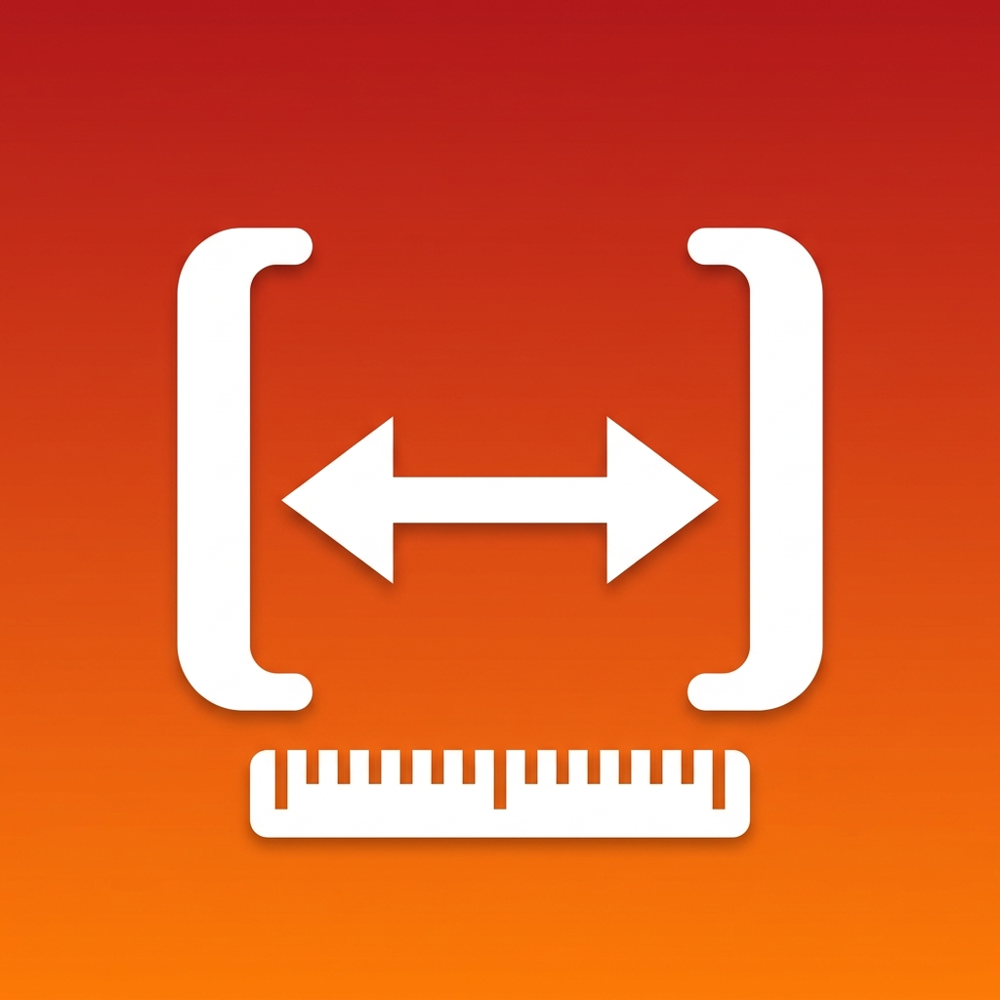

TouchCaliper は、iPhone の画面に実寸（ミリメートル）の定規グリッドを描き、画面に乗せた小物を 2 本のバーで挟んでサイズを測るアプリです。ネジ・ボタン・電池・SD カード・付箋など、身のまわりの小物を 0.1mm 単位でサッと測れます。
測定・グリッド・較正の基本機能はずっと無料です。買い切りの Pro で「結果の画像共有・保存」と「測定履歴」が使えます。
ご質問・ご要望・不具合報告は、お問い合わせフォームよりお寄せください。
TouchCaliper turns your iPhone screen into a real-size millimetre ruler. Lay a small object on the screen and pinch it between the two bars to measure it to 0.1 mm — great for screws, buttons, batteries, SD cards and more.
Measuring, the grid and calibration are always free. A one-time Pro unlock adds image sharing and measurement history.
The app collects no personal data and works fully offline. See the Privacy Policy.